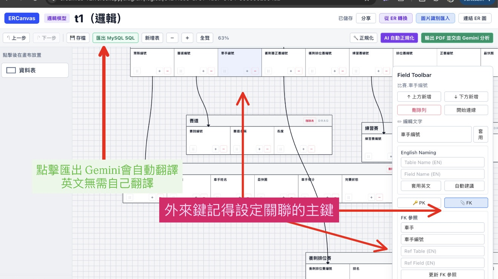
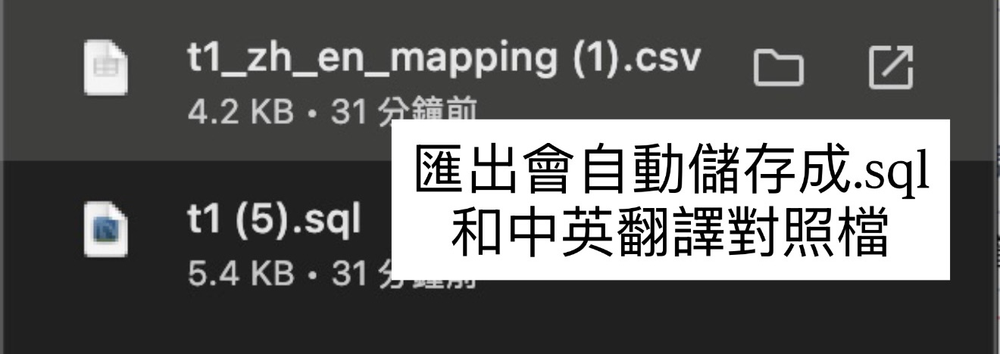
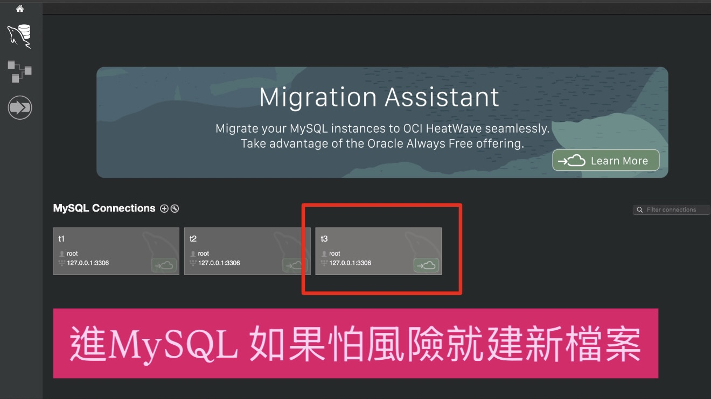
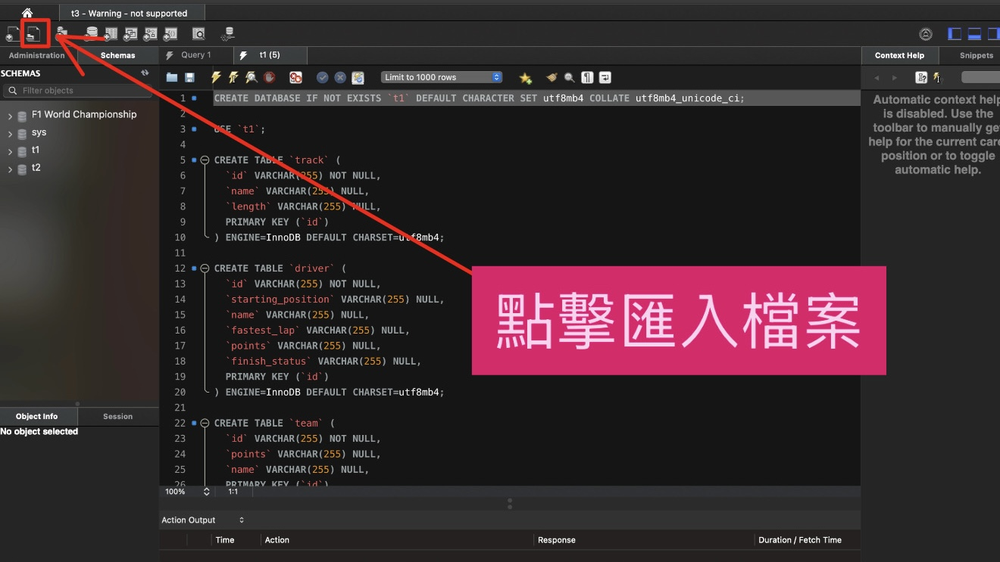
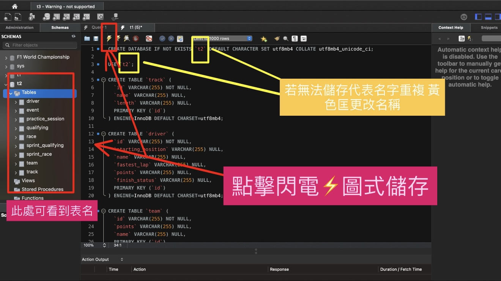
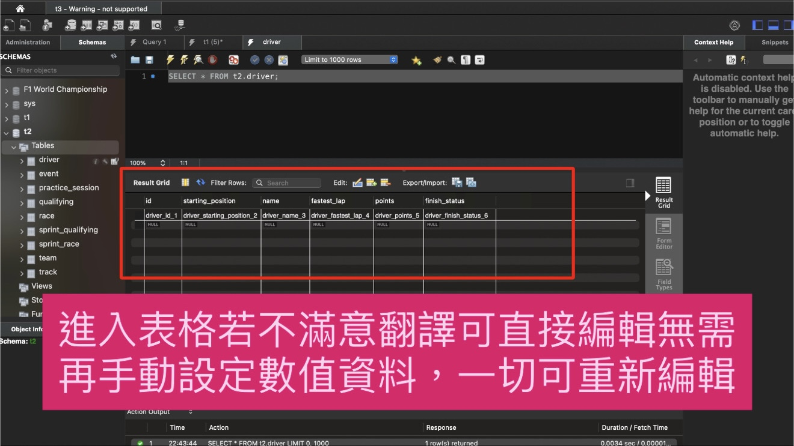
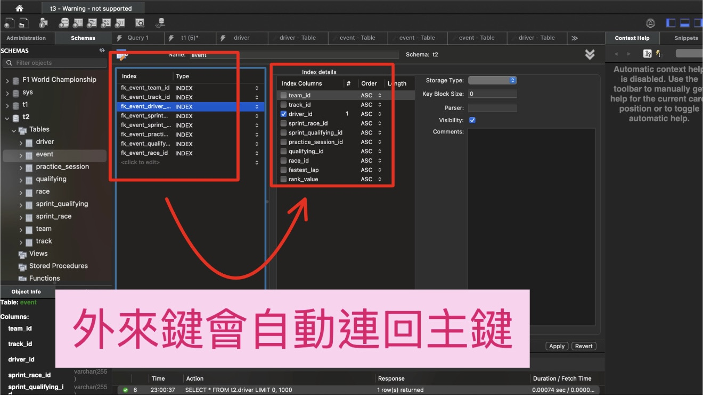
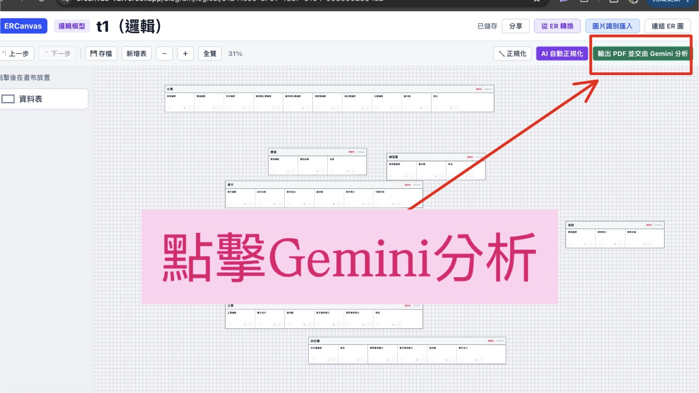
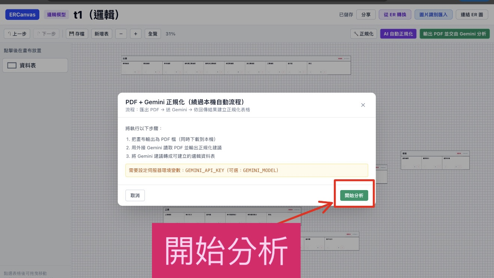
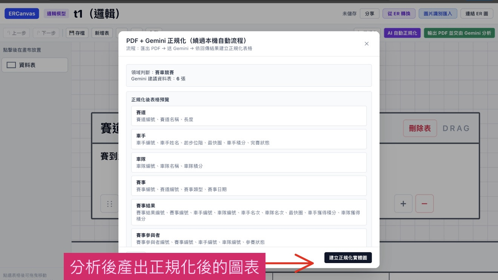

Step-by-step Tutorial
ERCanvas
× MySQL
開始教學
Scroll
完整使用流程

📐 step1.png — ERCanvas 設計介面ERCanvas

📁 step2.png — 匯出檔案清單Export
Step-by-step Tutorial
完整使用流程

📐 step1.png — ERCanvas 設計介面
📁 step2.png — 匯出檔案清單
🔌 step3.png — MySQL Workbench 連線
📥 step4.png — 匯入 SQL 檔案
⚡ step5.png — 執行建表完成
✏️ step6.png — 直接編輯表格
🔗 step7.png — 外來鍵關聯
🤖 norm1.png — 點擊 Gemini 分析
▶️ norm2.png — 開始分析視窗
✨ norm3.png — 正規化結果